物理层
关键字：逻辑与电气，Link与Lane，串并转换，编码，加扰，EQ，LTSSM
Introduction
物理层就是将上层封装好的东西，通过电信号传输出去。
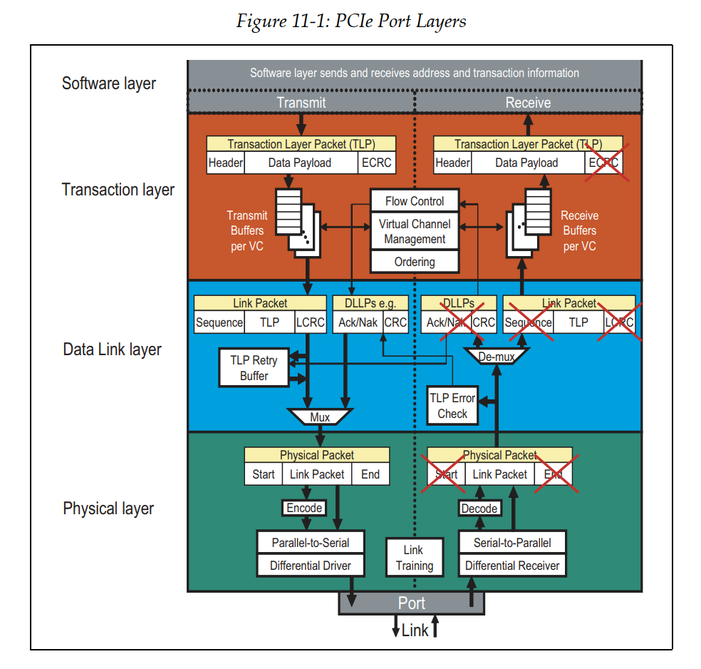
物理层主要分为两个子块：
- 逻辑子块（Logical Sub-Block）：逻辑子块负责编码和解码数据，以及处理时钟恢复和同步。它将数据链路层发送过来的数据进行编码后发送到电气子块。在接收方向，逻辑子块将电气子块接收的编码数据进行解码，恢复原始的数据，并送入数据链路层进行后续处理。此外，逻辑子块还处理与时钟恢复和数据流的对齐和同步相关的任务。
- 电气子块（Electrical Sub-Block）：电气子块负责实际的数据传输。它将逻辑子块编码的数据转换为电信号，并通过物理链路发送出去。在接收方向，电气子块将接收到的电信号转换回编码数据，并发送给逻辑子块。电气子块还负责处理物理链路的一些特性，如电平调整，差分信号传输，以及其他与物理链路的电气特性相关的任务。
Logical Sub-Block
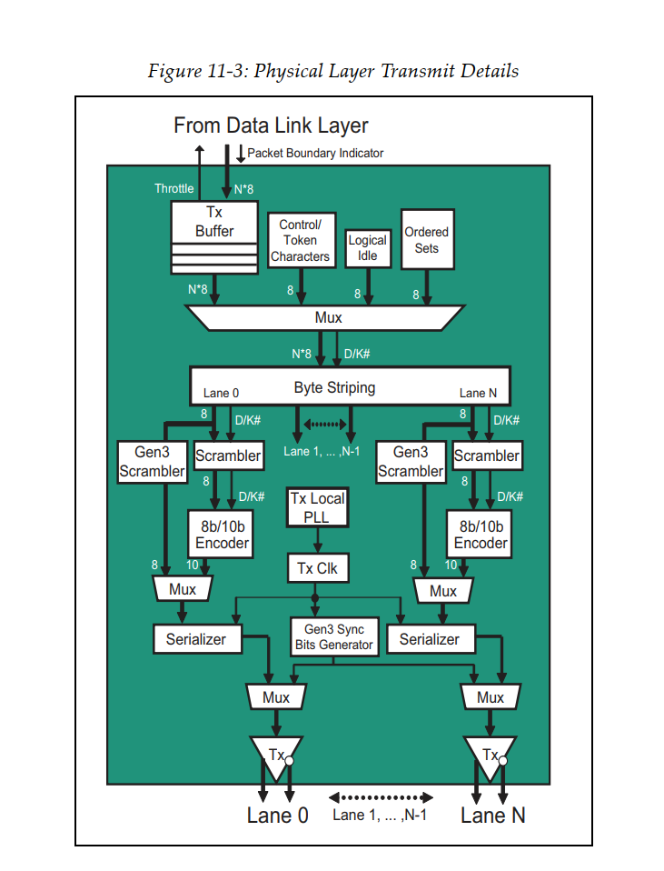
Tx Buffer & Mux
这里有个buffer，缓存DL层的包。同时有个Mux，选择发送DL层的东西，或者发送物理层自己的有续集。因为有时候需要停下正常的包，发一些有续集，如skip等，所以需要这个buffer。
Byte Striping
把字节流分到不同的lane上。
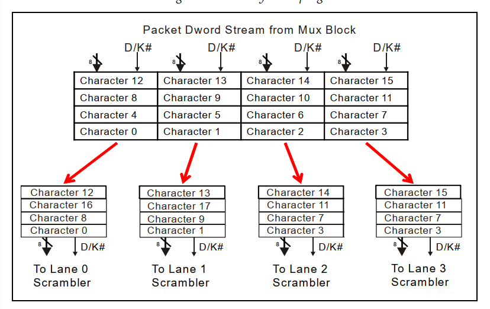
Data Scrambling
首先，物理层会将接收到的数据进行加扰（Scrambling），让原本规整的数据流看上去像是随机数一样（所以有时候又把这个称为伪随机数生成：pseudo-random number generator）。
这样做的目的是为了避免信号的能量聚集在某些特殊的频段上，从而减少EMI。原理是这样：我们传输的数据其实是大量高频的0和1，而由于传输的数据可能是类似的，所以会形成特定高频的01变化的模式。了解傅里叶变换的小伙伴知道，任何周期信号都可以表示为一系列成谐波关系的正弦信号的叠加。这样分解之后，这种特定形状的高频信号，就会在特定的频率上产生能量集中的电磁波，导致干扰。而加扰（Scrambling）就是为了避免这种特定形状的信号出现，从而避免这种情况的发生。
而PCIe使用了一种非常聪明的方法进行数据加扰 —— 利用XOR运算！也就是线性反馈移位寄存器（LFSR，Linear-feedback shift register）
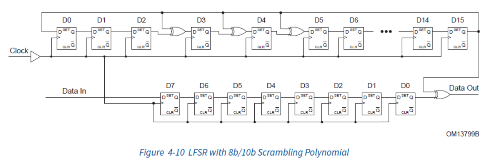
PCIe使用的是伽罗瓦（Galois）式LFSR，其中PCIe 1.0和2.0使用的是16位的LFSR的多项式表达为：
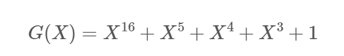
而3.0开始之后，使用的是更长的23位LFSR，表达为：
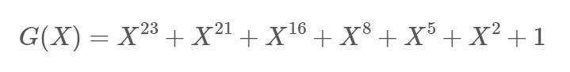
这样，每一次时钟，LFSR就会产生一个伪随机的bit，然后我们用这个bit和数据再进行一次XOR运算，就可以达到数据加扰的目的了。
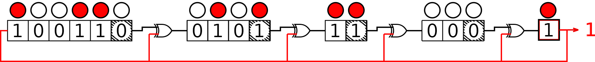
另外，PCIe1.0和2.0中，数据加扰用的LFSR的初始值（Seed）都是0xFFFF，但是在PCIe3.0之后，为了避免不同的Lane上出现相似的数据，每条Lane上的LFSR的初始值（Seed）都不一样（大于等于8的Lane ID需要对8取模）：
| Lane | Seed |
|---|---|
| 0 | 1DBFBCh |
| 1 | 0607BBh |
| 2 | 1EC760h |
| 3 | 18C0DBh |
| 4 | 010F12h |
| 5 | 19CFC9h |
| 6 | 0277CEh |
| 7 | 1BB807h |
这个方法聪明的地方在于，通过XOR产生的伪随机数是可以恢复的！因为只要操作数一样，两次XOR操作的效果会被抵消，所以只要发送方和接收方的Seed一样，那么接收方就可以通过执行完全一样的LFSR操作，来恢复出原始的数据。
最后，为了方便我们用示波器调试，数据加扰是可以被关闭的。规范没有说怎么关闭，具体看厂商实现。
Encoding
在打乱数据之后，接下来就是对数据进行编码（Encoding）了。编码的目的是保证传输的0和1的数量尽可能的一致，从而保持DC平衡（DC Balance），让数据的传输更加可靠，也能帮助PCIe从数据信号中恢复时钟（Clock Recovery）。
PCIe使用的编码方式有三种：8b/10b编码，128b/130b编码和242B/256B FLIT编码。而一旦知道了编码方式和PCIe的总线时钟频率，我们就可以算出来每条Lane的传输速率了。用PCIe 1.0 8b/10b来举例子，这个代表8bit的数据会被编码为10b的数据进行传输，所以，最后每条Lane的传输速率就是：
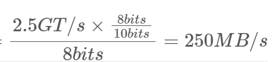
以下是PCIe各个版本的编码方式和传输速率：
| PCIe Version | Line code | Transfer rate per lane | Throughput x1 | Throughput x16 |
|---|---|---|---|---|
| 1.0 | 8b/10b | 2.5 GT/s | 250 MB/s | 4 GB/s |
| 2.0 | 8b/10b | 5 GT/s | 500 MB/s | 8 GB/s |
| 3.0 | 128b/130b | 8 GT/s | 984.6 MB/s | 15.75 GB/s |
| 4.0 | 128b/130b | 16 GT/s | 1.969 GB/s | 31.51 GB/s |
| 5.0 | 128b/130b | 32 GT/s | 3.938 GB/s | 63.02 GB/s |
| 6.0 | 1b/1b 242B/256B FLIT | 64 GT/s | 7.564 GB/s | 121.00 GB/s |
注意：242B/256B是大写的B，不再是bit而是Byte了。
8b/10b编码
8b/10b编码主要用在PCIe 1.0和2.0中，为2.5GT/s和5GT/s的传输频率提供数据编码 [4]。它的核心思想是，将一个8bits的数据拆分成一个5bits的数据和一个3bits的数据，然后分别通过一个固定的关系映射到6bits和4bits的中空间中去，从而避免连续的0或者1的出现。如下：ABCDEFGH被拆分成ABCDE和FGH，然后转换为小端，再分别映射到abcdei和fghj中去。
转换后的8b/10b编码有两种类型的值：控制码（K）和数据码（D），根据数据ABCDE和FGH的分组，被记为D.<ABCDE>.<FGH>或者K.<ABCDE>.<FGH>。其具体的映射方式如下：
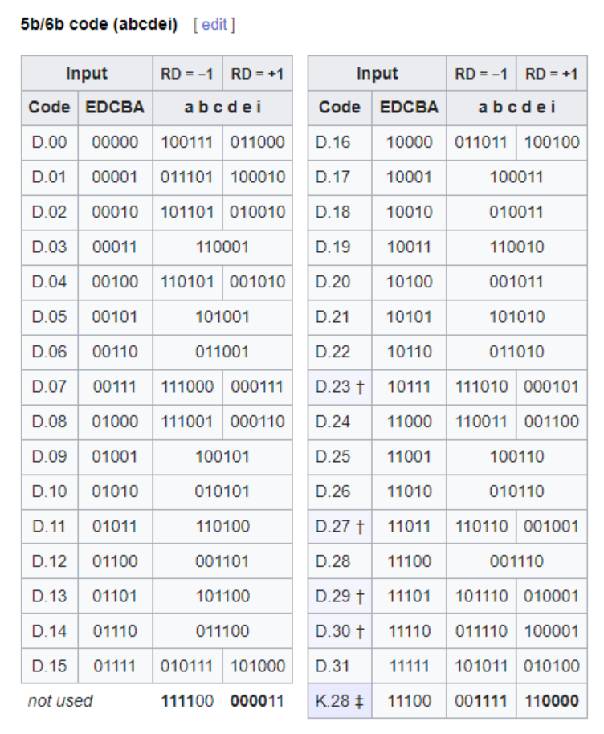
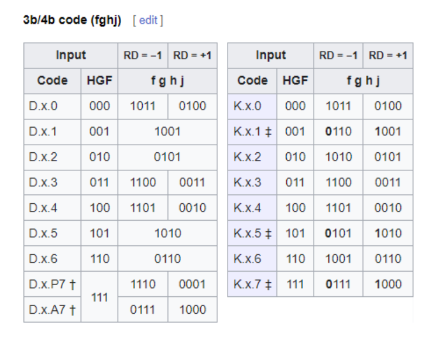
这里**RD（Running Disparity）**代表着当前字节开始前，前面的数据流中1的数量减去0的数量的差值。为了保证精确的01数量一致，8b/10b编码会使用这个值对当前字节的编码进行调整。这样它就能保证在传输每个字节之前，RD的值不会超过±1，在传输数据过程中，RD的值不会超过±2。
由于硬编码的原因，8b/10b编码可以精确的01数量一致，从而达到稳定的保持DC平衡，但是它的问题在于编码设计复杂，而且编码的效率有高达20%的浪费！这也是为什么PCIe 3.0之后，就不再使用8b/10b编码的原因。
128b/130b编码
PCIe 3.0之后，为了提高编码效率从而提升有效带宽，PCIe开始使用128b/130b编码。可以看到由于每130个bits中间，只有2个bits是浪费的，所以它的效率高达98.46%！
128b/130b编码是64b/66b编码的变形 [5]，唯一的区别是将其payload的部分扩大了一倍（64b -> 128b）。它和8b/10b最大的不同在于它不再使用硬编码表进行转换了，而是依赖于上面我们提到的3.0之后的LFSR算法来进行转换，从而生成一个统计意义上的DC平衡的数据流。
除了使用LFSR算法进行数据处理以外，在编码的时候，128b/130b编码会做两件事情：Framing和Encoding。
Framing
首先，128b/130b编码会将整个上层的包（不是一个block）的之前和之后加上特定的标识用的Token，用来表示这个包的开始：
- 对于TLP而言，它会在前面增加一个2字节的头，并且复写数据链路层的前4个bits，将其修改为FCRC，从而和已有的数据链路层的Seq一起组成一个4字节的token —— STP（Start of TLP）。
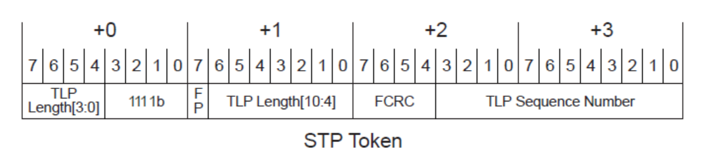
- 对于DLLP而言，它会用一个2字节的Token - SDP（Start of DLLP）表示开始。
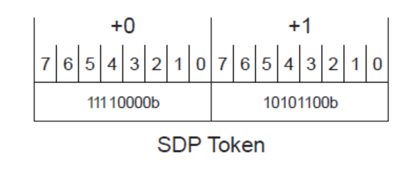
这两个Token会被永远从Lane 0开始，并作为一个数据包的开头（Byte 0）。另外，除此以外，还有用来标记空闲的IDL（Logical Idle），Nullify之前TLP的EDB（EnD Bad），和标记数据流结束的EDS（End of Data Stream）。
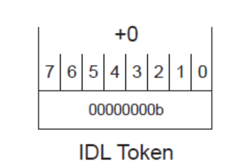
Encoding
然后，128b/130b编码会将整个数据包分为大小为128bit的block，然后在每个128bits的payload之前，加上一个2bits的同步头（SyncHeader），用来表示这个payload的类型并且做多通道同步。这个同步头的值有两种：
- 01b：表示这个payload是数据块（Data Block），长度为128bits
- 10b：表示这个payload是Ordered Set Block，长度也为128bits
比如，我们假设需要在一个通道上传输一个数据块，总共16个字节，S0-S15，其中最低位的bit我们记作.0，最高位记作.7，那么传输序列如下（注意同步头也会被转位小端发送，所以01b会变成10b）：
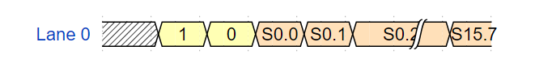
当有多条通道的时候，发送的时候数据将被分配到多个通道上同时发送，并且时钟对齐的：
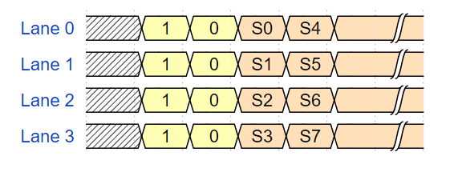
242B/256B FLIT编码
虽然128b/130b的编码很好，但是随着对速率的要求变得更高，PCIe6.0更换了从PCIe1.0一致沿用下来的NRZ（Non-Return-To-Zero）信号调制方式，而是转而使用了PAM4（Pulse Amplitude Modulation 4）信号调制方式。这种调制方式可以在同样的信号频率下，提供双倍的传输速率（下面会详细说）。然而这样的调制方式，也让错误率变得更高，所以PCIe6.0开始，PCIe使用了242B/256B FLIT编码，加入更多的校验机制，来提高信号的可靠性。
242B/256B FLIT编码的传输单位是一个FLIT，大小为256个字节（不是bits）。
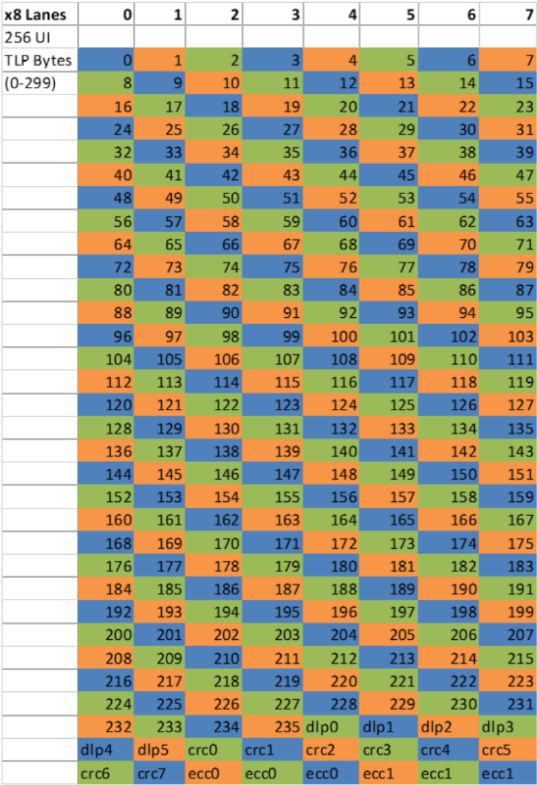
其中没有包头，从报文开始，前236个字节是TLP数据，然后是6个字节的DLLP（Data Link Layer Packet），8个字节的CRC，最后是6个字节的FEC（Forward Error Correction）。由于FLIT中已经带有CRC了，所以DLLP和TLP中是没有CRC的。传输后如果发现问题，就会尝试使用FEC进行修正（单字节），如果不行，就会对整个FLIT进行重传。
另外，一旦开启了FLIT模式，PCIe就会一直使用FLIT模式，即使速率降低到NRZ的速率（比如2.5 GT/s，5.0 GT/s，8.0 GT/s，16.0 GT/s，32.0 GT/s）也不会转换回NRZ模式了。
Electrical Sub-block
Parallel to Serial
首先，由于我们最后的信号是串行的，而逻辑子块上传下来的数据是是一个一个的字节（单通道），所以需要将按字节的并行信号转变为最后的串行信号（Parallel to Serial），再进行发送。
自然的，接收方则相反，最后当所有的数据处理完成之后，需要将串行的数据重新转化为并行的数据，交给数据链路层进行处理。
调制（Modulation）
接下来转换为串行的数据需要经过调制，将其变为易于传输的电信号，而接收方则需要将电信号重新解调，转换会数字信号。
NRZ编码（Non-Return-to-Zero）
在PCIe1.0到5.0中，PCIe一直使用的调制方法叫做不归零码（NRZ，Non-Return-to-Zero） [10]。这种调制方式特点是与归零码（RZ，Return-to-Zero）相比，它的每个比特1会占满整个时钟周期，不会在后半个周期归零。PCIe使用的是中的两极不归零码（Bipolar NRZ level），它的编码方法很简单，就是将0变为负电平−V，1变为正电平+V，其电平图和眼图如下：
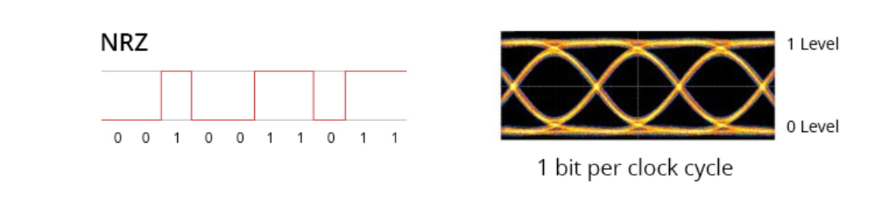
由于不归零码本身没有稳定的机制传递时钟，所以需要上面提到的编码（Encoding），加扰（Scrambling）和其他方式来进行辅助时钟恢复，这个我们下面会提到。
PAM4编码
为了支持更高的传输速率，PCIe6.0开始使用PAM4（Pulse Amplitude Modulation 4）调制方式，即脉冲幅度调制，将00变为−V，10变为+V，01变为−V/3，11变为+V/3，其眼图与每个电平表示的信号如下：
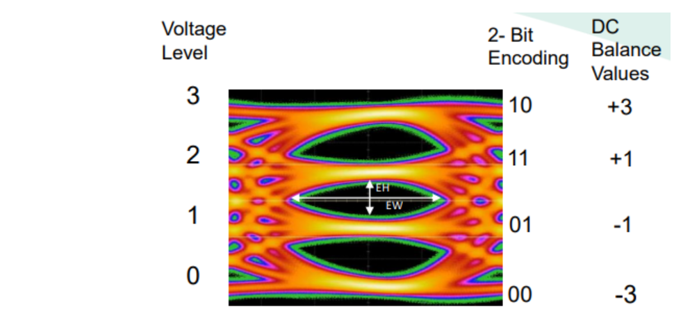
这样在同样的电压下，容纳的状态就变成了之前的两倍，所以在同样的时钟下，传输速率也就变成了之前的两倍！但是这样也就导致了更高概率的误码。
差分信号（Differential Signal）
再接下来，再最后发送给真正的电路前，为了对抗电磁辐射等等原因导致的干扰，PCIe使用了差分信号（Differential Signaling）的方式进行传输。即将信号分为正负两个信号，然后在接收端，将两个信号相减，重新得到原始信号（这就是在Pinout中，我们看到的Differential Pair）。
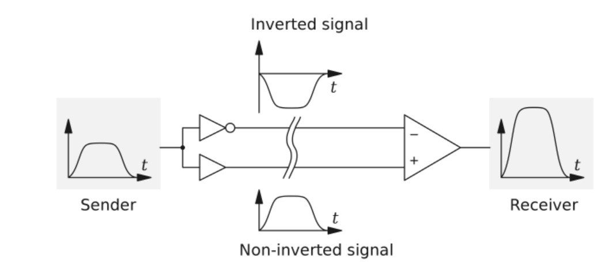
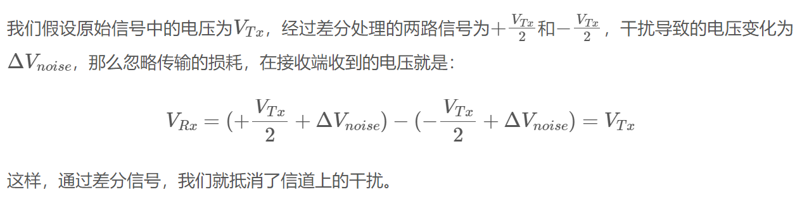
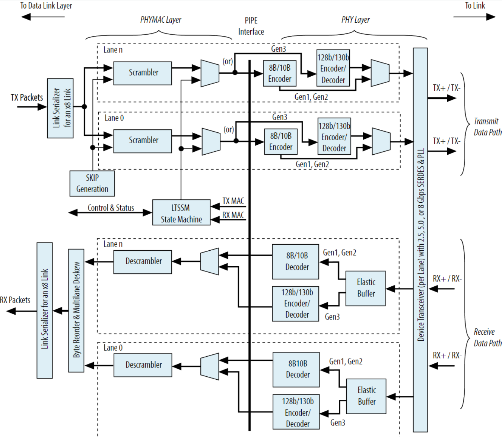
参考： Blog